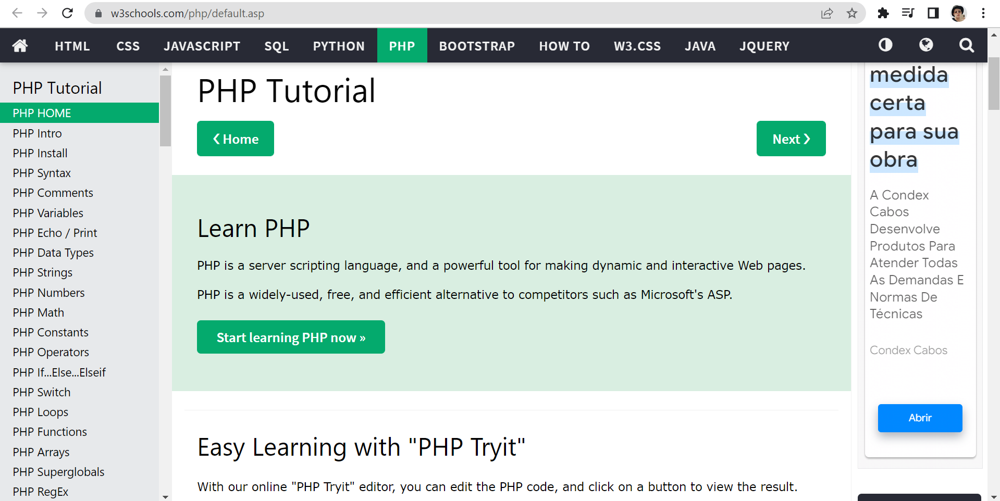
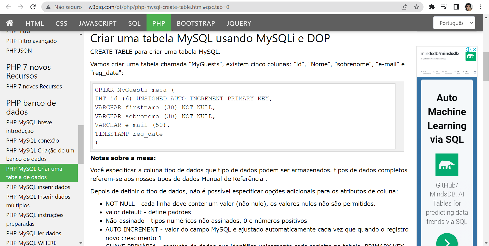
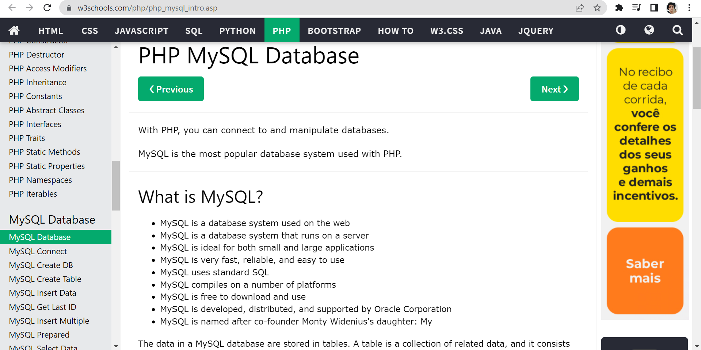
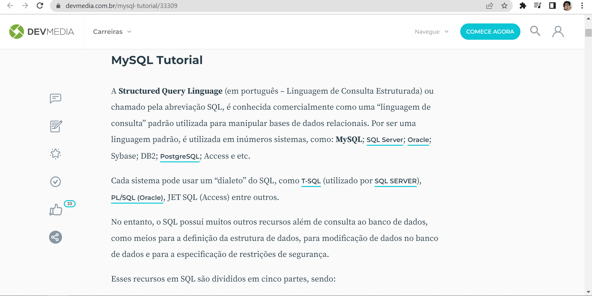

PHP
PHP Tutorial
O site W3Schools ensina PHP de uma forma simplificada de modo que as pessoas mais inexperientes no ramo tecnológico consigam entender.
Tabela de dados
O tutorial do site W3bing ensina como criar uma tabela de dados a partir de elementos de PHP e MySQL, com a definição dos termos mais importantes, mas que muitas pessoas ainda se confundem.
Sistema de busca
Muito necessário para pesquisas, o Canal TI mostra como criar uma barra de pesquisa para facilitar com que usuários achem conteúdos necessários dentro de uma página.
PHP Moderno
Neste podcast diversos desenvolvedores discutem com a linguagem de programação back-end PHP revolucionou a tecnologia e quais são as suas principais aplicações na atualidade.
MySQL
Banco de dados MySQL
Novamente o site W3Schools, importante ferramenta de aprendizado para jovens desenvolvedores, instrui como criar um banco de dados utilizando o MySQL.
Tutorial MySQL
O website DevMedia apresenta diversos passos, através de um tutorial completo de MySQL, de como criar as principais funções desta linguagem para que possa ser aplicada de uma maneira fácil e rápida.
